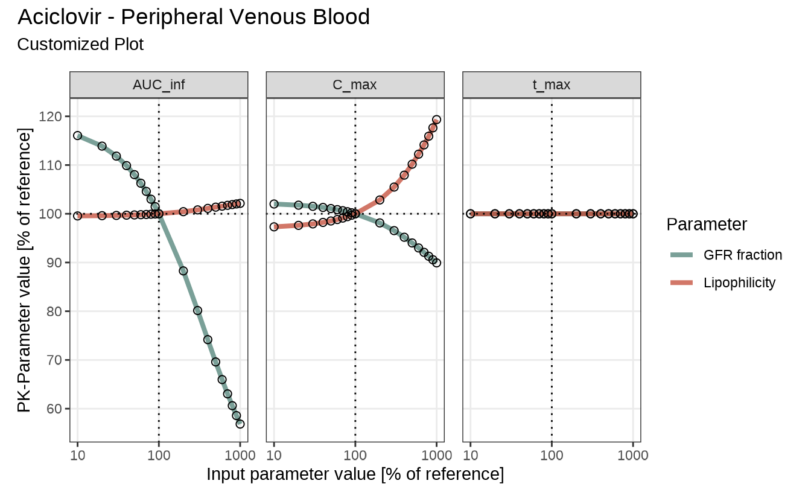
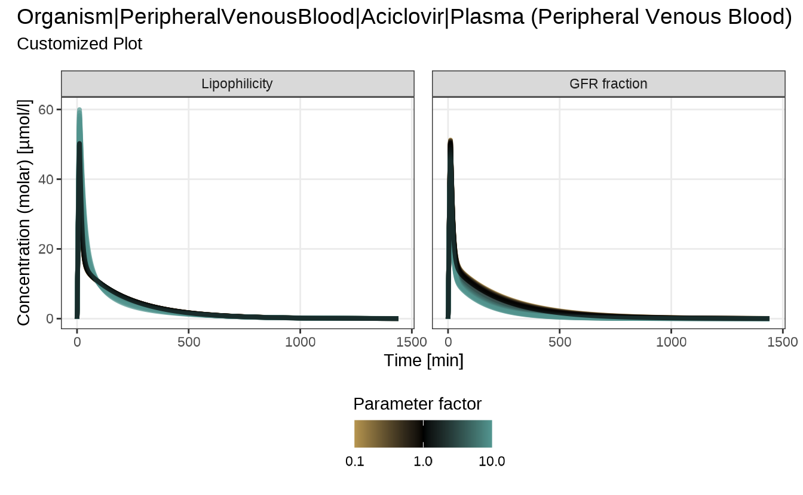
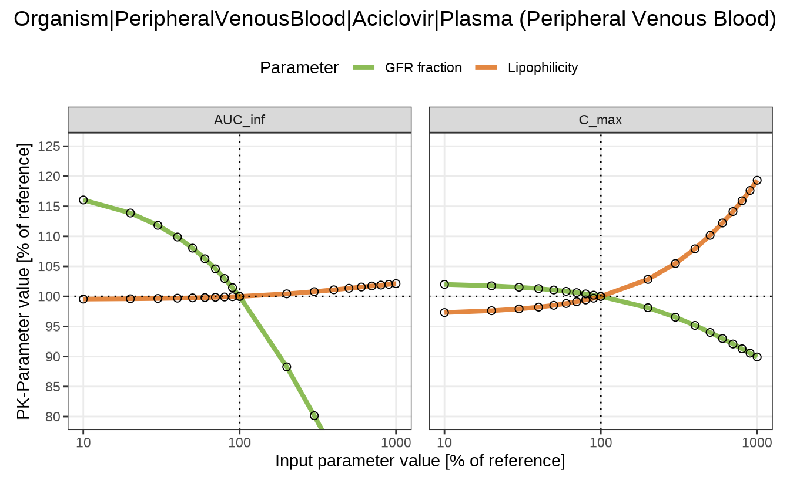

Sensitivity Analysis – Plot Customization
Source:vignettes/sensitivity-plots.Rmd
sensitivity-plots.RmdCustomizing Sensitivity Analysis Plots
Introduction
This vignette builds on the aciclovir example presented in the Sensitivity Analysis vignette, which demonstrated the standard workflow and default plotting functions available in esqlabsR.
Here, the focus shifts to customizing plot
appearance, using the defaultPlotConfiguration
object. This allows you to adjust plot aesthetics such as titles, axis
scaling, colors, and more—without modifying the core plotting
functions.
In cases where the default options are insufficient or do not meet your specific needs, we also show how to further customize the output using standard ggplot2 or patchwork operations.
Setup and Running the Sensitivity Analysis
Before applying this configuration, let’s first run a sensitivity analysis using the aciclovir example:
library(esqlabsR)
simulationFilePath <- system.file(
"extdata/examples/TestProject/Models/Simulations/Aciclovir.pkml",
package = "esqlabsR"
)
simulation <- loadSimulation(simulationFilePath)
outputPaths <- enum(list(
Aciclovir_PVB = "Organism|PeripheralVenousBlood|Aciclovir|Plasma (Peripheral Venous Blood)"
))
# Use named parameter paths to customize facet labels
namedParameterPaths <- c(
"Lipophilicity" = "Aciclovir|Lipophilicity",
"GFR fraction" = "Neighborhoods|Kidney_pls_Kidney_ur|Aciclovir|Glomerular Filtration-GFR|GFR fraction"
)
analysis <- sensitivityCalculation(
simulation,
outputPaths,
namedParameterPaths
)Available Plot Types
The esqlabsR package provides three plotting functions to visualize sensitivity analysis results:
sensitivitySpiderPlot(): Creates spider plots for sensitivity calculation. Each plot shows how a set of PK parameters for a given output responds to changes in model parameters. The x-axis represents the parameter values (absolute or relative), and the y-axis shows the resulting PK changes.sensitivityTimeProfiles(): Creates time profiles for selected outputs generated in a sensitivity analysis. Each plot illustrates the dynamic response of model outputs over time in reaction to parameter variations.sensitivityTornadoPlot(): Generates tornado plots to visualize the effect of modifying parameters by a specific scaling factor and its reciprocal. Each plot highlights the impact of parameter changes on PK results for a selected output.
More detailed information on function signatures and examples can be found in:
Customizing Plots with defaultPlotConfiguration
The defaultPlotConfiguration object provides a
centralized way to control the appearance of sensitivity analysis plots.
If no configuration is provided (NULL), each plotting
function will automatically create one using
createEsqlabsPlotConfiguration() with default settings.
These defaults ensure a consistent and clean appearance across plot types, but they can be fully customized to match specific presentation or publication requirements. Each plotting function recognizes only a subset of options depending on the visual structure of the plot.
The table below summarizes which configuration options are supported by each plot type:
| Configuration Option | Spider Plot | Time Profiles | Tornado Plot | Description |
|---|---|---|---|---|
legendPosition |
✔️ | ✔️ | ✔️ | Position of the legend on the plot |
legendTitle |
✔️ | ✔️ | ✔️ | Title displayed for the legend |
linesAlpha |
✔️ | ✔️ | Transparency of line elements | |
linesColor |
✔️ | ✔️ | ✔️ | Color of lines (or bars for tornado) |
linesSize |
✔️ | ✔️ | Thickness of line elements | |
pointsShape |
✔️ | ✔️ | Shape of data points | |
pointsSize |
✔️ | Size of data points | ||
title |
✔️ | ✔️ | ✔️ | Main title of the plot |
titleSize |
✔️ | ✔️ | ✔️ | Font size of the title |
subtitle |
✔️ | ✔️ | Subtitle text below the title | |
xAxisScale |
✔️ | ✔️ | X-axis scale type (“log”, “lin”) | |
xLabel |
✔️ | ✔️ | ✔️ | Label for the x-axis |
xValuesLimits |
✔️ | Limits for x-values | ||
yAxisScale |
✔️ | ✔️ | Y-axis scale type (“log”, “lin”) | |
yAxisTicks |
✔️ | Number of ticks on y-axis | ||
yAxisLimits |
✔️ | Y-axis limits | ||
yValuesLimits |
✔️ | Limits for y-values | ||
yLabel |
✔️ | ✔️ | ✔️ | Label for the y-axis |
Note: defaultPlotConfiguration follows
ggplot2-style aesthetics (e.g., legendPosition,
linesColor, pointsShape). The sensitivity
plotting functions apply the fields shown in this vignette; other fields
have no effect here. For a broader catalog and default values, see the
PlotConfiguration reference
and the vignette.
Example - create and apply configuration
To explicitly control the appearance of your plots, create and modify a configuration object as shown below:
myConfiguration <- createEsqlabsPlotConfiguration()
myConfiguration$linesColor <- c("#4D8076", "#C34A36")
myConfiguration$title <- "Aciclovir - Peripheral Venous Blood"
myConfiguration$subtitle <- "Customized Plot"
myConfiguration$legendPosition <- "right"You can then pass this object to any sensitivity plotting function:
sensitivitySpiderPlot(
sensitivityCalculation = analysis,
defaultPlotConfiguration = myConfiguration
)
#> $`Organism|PeripheralVenousBlood|Aciclovir|Plasma (Peripheral Venous Blood)`
Note that when a named vector is used for
parameterPaths, those names will also be used as labels in
the plots.
Direct Arguments vs. Configuration Object
Some plot-specific settings—such as axis scaling—are available as direct arguments to the plotting functions. These options control core aspects of the plot’s structure and behavior and are therefore exposed explicitly.
Examples include:
-
xAxisScaleandyAxisScaleinsensitivityTimeProfiles()
-
xAxisTypeandyAxisTypeinsensitivitySpiderPlot()
When specified, these arguments override the
corresponding values in the defaultPlotConfiguration
object. This provides a convenient way to apply one-off changes without
modifying the configuration globally.
The example below demonstrates this behavior: although the
configuration sets the y-axis to a logarithmic scale, passing
yAxisScale = "lin" directly to the function takes
precedence and applies a linear scale instead.
myConfiguration <- createEsqlabsPlotConfiguration()
myConfiguration$linesColor <- c("#d8b365", "#5ab4ac")
myConfiguration$subtitle <- "Customized Plot"
myConfiguration$yAxisScale <- "log"
sensitivityTimeProfiles(
sensitivityCalculation = analysis,
yAxisScale = "lin",
defaultPlotConfiguration = myConfiguration
)
#> $`Organism|PeripheralVenousBlood|Aciclovir|Plasma (Peripheral Venous Blood)`
Modifying plots after creation
The sensitivity plotting functions in esqlabsR are
designed to generate clean, publication-ready visuals by default.
However, when additional customization is needed—beyond what is offered
through defaultPlotConfiguration you can manually modify
the output using standard ggplot2 and
patchwork tools.
Each plotting function returns a list of
patchwork objects, with one entry per output path.
A patchwork object is a composite layout of individual
ggplot2 plots, allowing you to:
- Apply global changes to all subplots using the
&operator - Access and modify individual subplots
This flexibility makes post-processing straightforward. For example, modifying a spider plot after creation:
library(ggplot2)
library(patchwork)
spiderPlots <- sensitivitySpiderPlot(
sensitivityCalculation = analysis,
pkParameters = c("AUC_inf", "C_max")
)
# Extract the plot for a specific output path
spiderPlot <- spiderPlots[[outputPaths$Aciclovir_PVB]]
# Modify plot using `patchwork` and `ggplot2` functions
spiderPlot &
theme(legend.position = "top") & # Place legend above the plot
guides(col = guide_legend(ncol = 2)) & # Display legend entries in two columns
scale_color_manual(values = c("#66a61e", "#d95f02")) &# Use custom colors for lines
coord_cartesian(ylim = c(80, 125)) # Zoom in on the y-axis range
Summary and Best Practices
This vignette demonstrated how to customize and refine sensitivity analysis plots in esqlabsR using the Aciclovir example.
Key takeaways:
- Use
createEsqlabsPlotConfiguration()to define and reuse plot styling across spider, tornado, and time profile plots. - Apply direct function arguments (e.g.,
yAxisScale) to override configuration values for one-off adjustments. - Access and post-process plots using standard ggplot2 and patchwork methods for full flexibility.
- Named
parameterPathsautomatically control facet labels in plots, improving clarity.
For consistent, high-quality plots: - Keep a reusable
defaultPlotConfiguration object with your preferred style.
- Use patchwork::& to apply global tweaks (e.g.,
layout, limits, themes). - Extract and modify subplots as needed for
custom presentations or publications.
With these tools, you can quickly move from simulation to high-quality visualizations tailored to your specific audience and goals.